Part 1: Reconnaissance
Within the VM, I identified its IP address and used it to locate other devices on the network. I already knew which network adapter the host runs, so I used the associated IP to scan it. Then, using Nessus, I ran a more comprehensive scan, looking for vulnerabilities and open ports. Once the scan was complete, I generated the report.
#ip addr
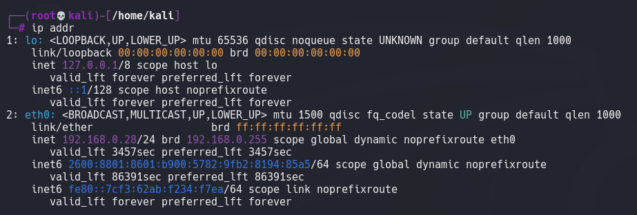
#nmap -sn 192.168.0.28/24
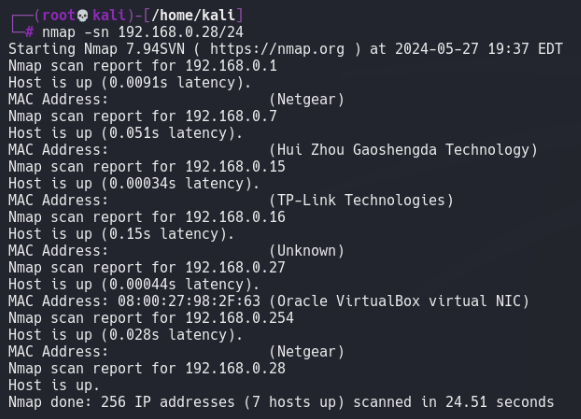
#nmap 192.168.0.16
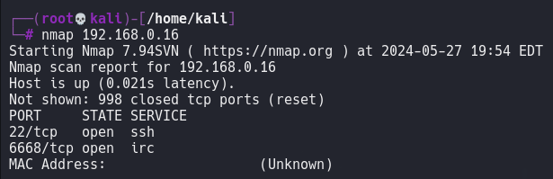
COnfiguring Nessus and scanning the host
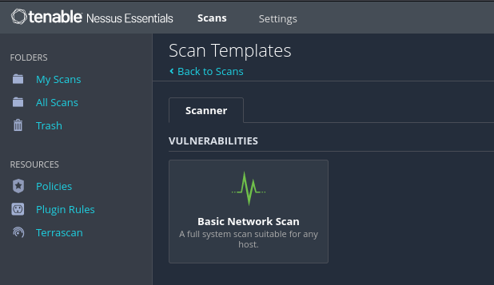
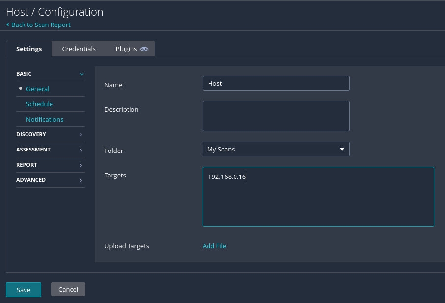
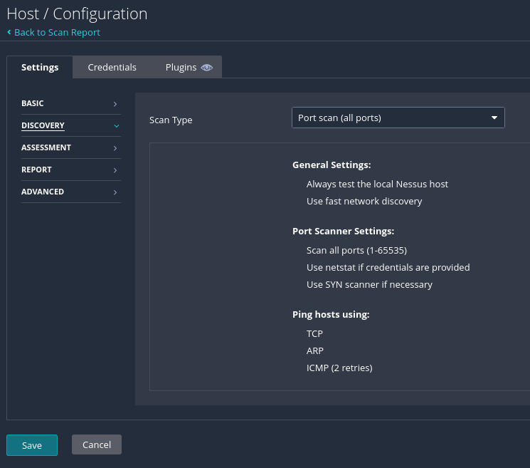
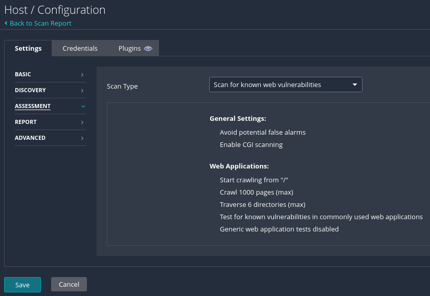
The scan idenitied vulnerabilities and open ports
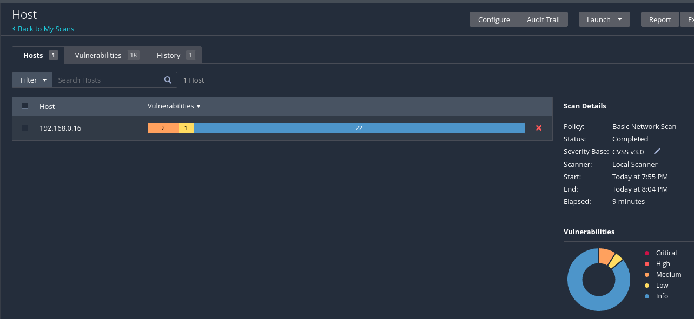
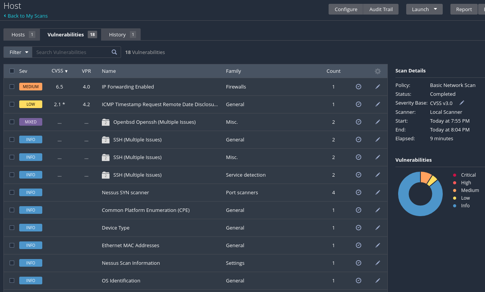
Generationg the report. This exports a PDF detailing the results.
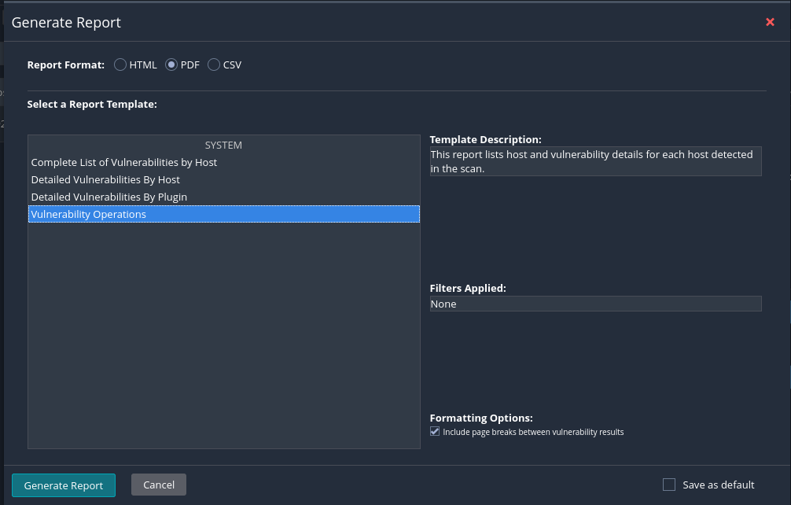
Note: I didn't include the Tenable PDF report generated by Nessus, as it contains sensitive information about a real-world machine/network.
Part 2: Remediation
On the host machine, I addressed the highest priority vulnerabilities that Nessus discovered by creating firewall rules in PowerShell and updating TCP/IP parameters in the registry. Next, I set up the local Action1 agent and ran a remote scan to identify all vulnerabilities on the host. Most of the vulnerabilities found were due to outdated or unpatched software. I configured Action1 to document compensating controls, schedule automation of the patch and update deployment, and initialized it. Once complete, I ran a final scan in Action1 to confirm the successful deployment. I then scanned the host again from the VM using Nessus, focusing only on vulnerabilities this time and excluding the port scan, for additional confirmation.
Fixing CVE-1999-0524
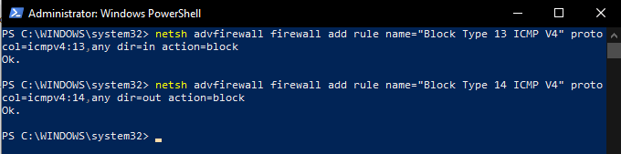
Fixing CVE-1999-0511
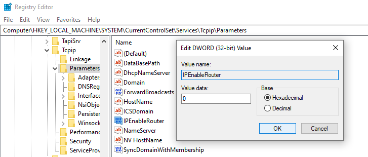
Setting up Action1's agent
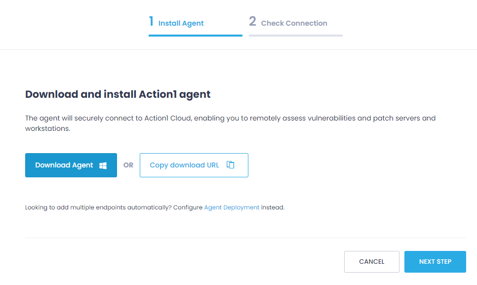
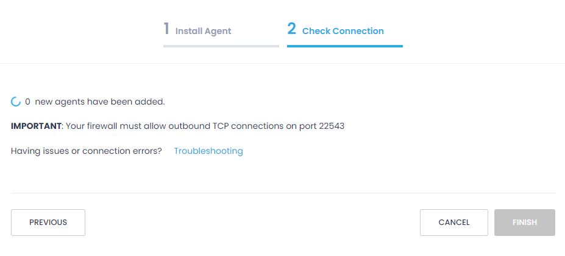
The dashboard presents immediate cause for alarm
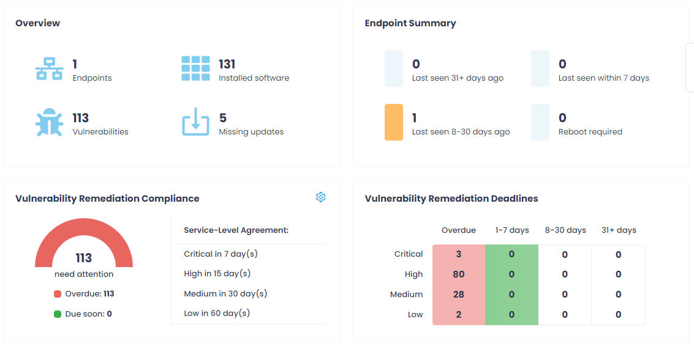
Setting up remediation automation
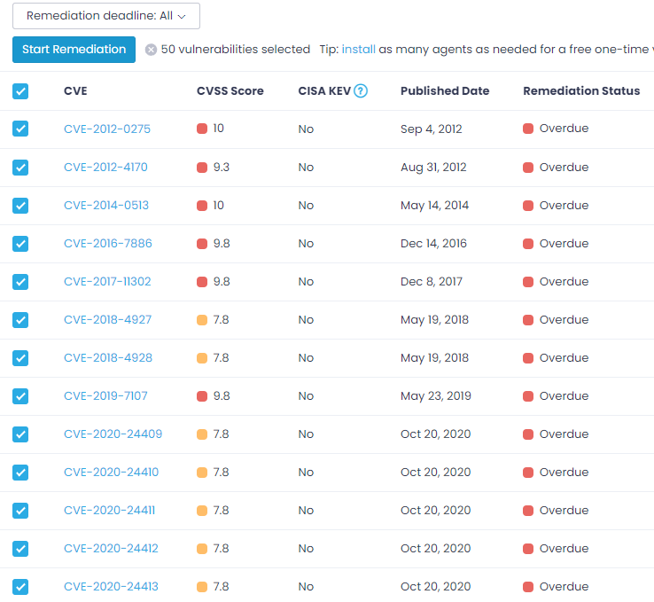
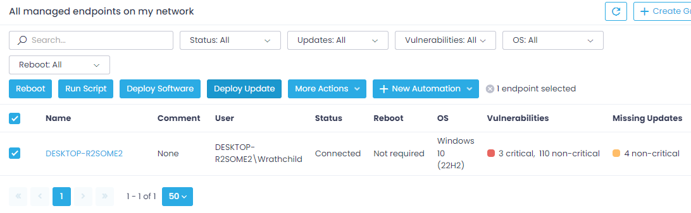Deploying the patches/updates - so far, so good
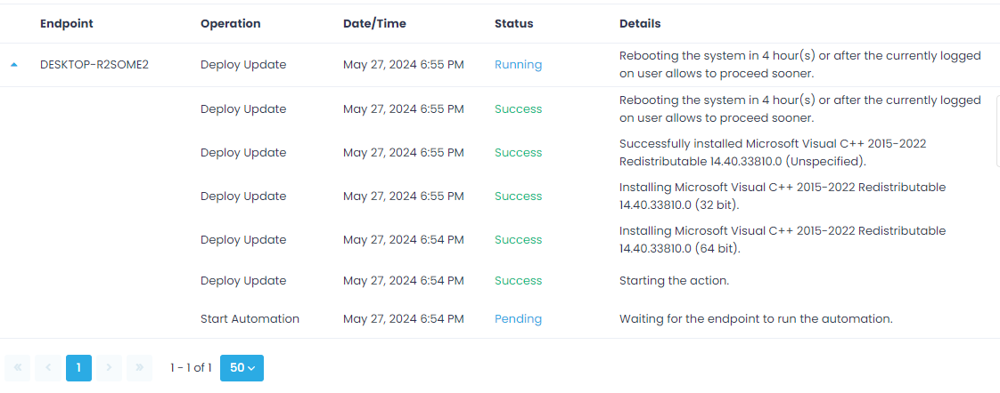Remediation Sucessful
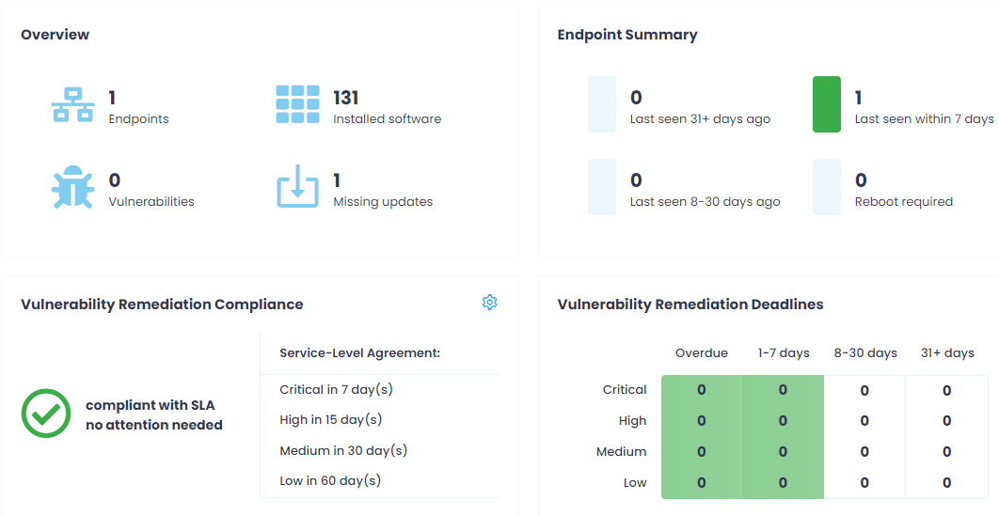One last check from the outside
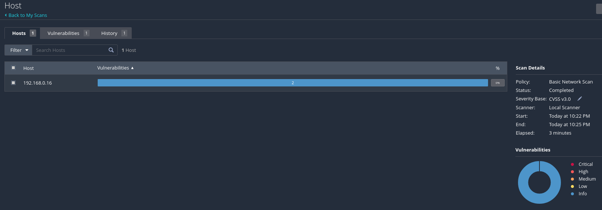